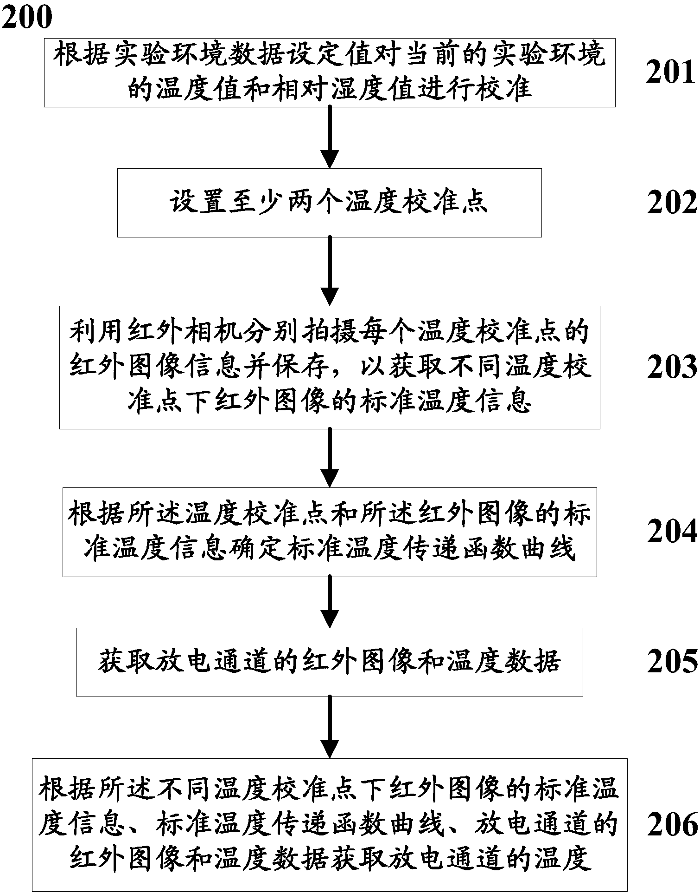

发明名称--一种基于纹影仪的放电通道温度定量识别方法及装置
| 申请号 | CN201610835514.8 | 申请日 | 2016.09.20 | ||
| 公开（公告）号 | CN106525243A | 公开（公告）日 | 2017.03.22 | ||
| IPC分类号 | G01J5/00 | 申请（专利权）人 | 中国电力科学研究院;华北电力大学(保定);国家电网公司;国网青海省电力公司电力科学研究院;国网河北省电力公司电力科学研究院; | ||
| 发明人 | 耿江海;丁玉剑;高树国;律方成;周军;姚修远;周松松;谷琛;王晰;康钧;王生富;刘云鹏;刘玉胜;姜德喜; | 优先权号 |
摘要:
摘要附图:
